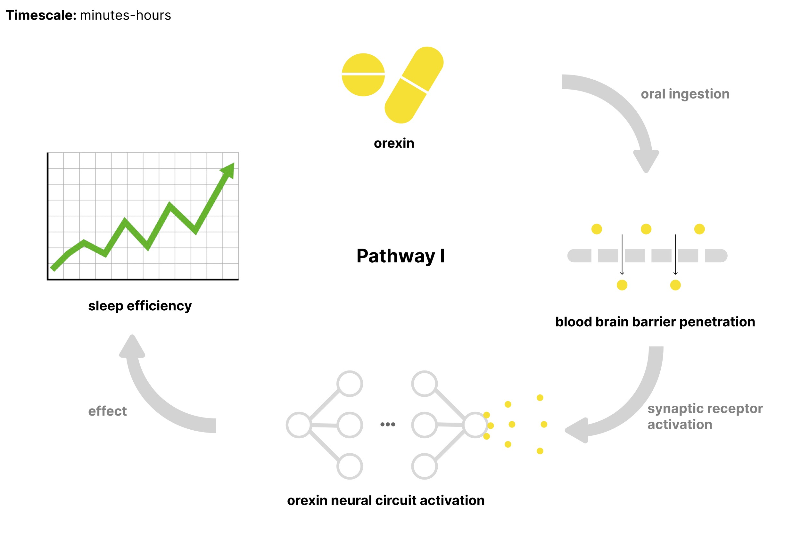
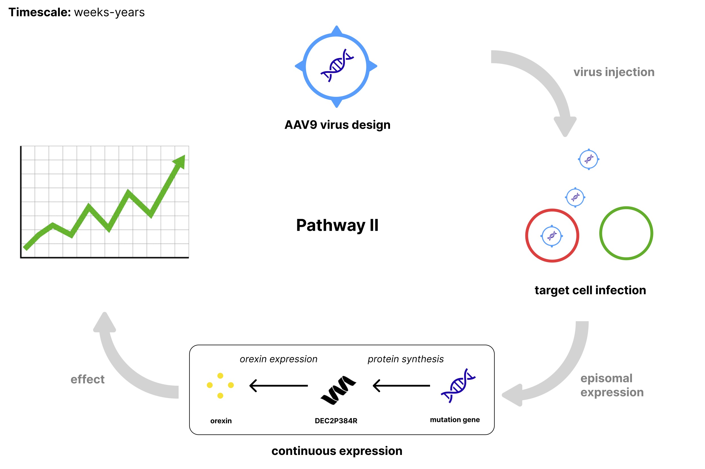

Sleep claims a third of human life. Like water, it's not a desire but a necessity. Sleep rules virtually every important system: brain, heart, mood, and immunity. Nature's terms are harsh. Sleep eight hours or face mental and physical decay. But what if sleep is negotiable? Can we control sleep?
See how much time you could gain by sleeping more efficiently. Try adjusting the values!
Rare mutations suggest a good night's sleep is not so fixed. It's estimated that less than one percent of the population have Familial Natural Short Sleep (FNSS), a benign mutation that allows them to sleep 1-2 hours less than the recommended 7-9 hours, without experiencing the negative effects of sleep deprivation [1].
Contrary to symptoms of chronic sleep deprivation, FNSS carriers are happier, thinner, and live longer lives [2]. Better health despite shorter sleep goes against everything we know about sleep. One explanation for this paradox is that FNSS carriers are sleeping more efficiently. They sleep less because their sleep quality is higher.
How does FNSS work? Five genes have been identified with the FNSS phenotype, but DEC2 is the most studied. In 2009, professor Ying-Hui Fu at UCSF discovered a DEC2 point mutation in two individuals from a family who slept 6.25 hours on average [3]. Normally, the DEC2 protein acts as an inhibitor to a transcription factor complex that increases levels of the neurotransmitter orexin. The mutation is a missense mutation where proline is replaced by arginine at position 384 in exon 5 (DEC2P384R), disrupting DEC2's ability to bind to the transcription factor. Left uninhibited, the transcription factor is able to express orexin more. This abnormally increased level of orexin expression partially explains reduced sleep, though it's far from the whole picture.
Fig 1. In normal humans, Dec2 weakens E12/Myod1's binding affinity to the Ebox1 promoter site of prepro-orexin, which is responsible for endogenous orexin synthesis. In FNSS mutants, the De2p384r's interaction with the E12/Myod1 complex is weaker, and there is greater orexin
Two decades of sleep research supports the link between orexin and sleep [4]. Studies of narcolepsy and insomnia have identified orexin as a key neurotransmitter that modulates awakeness. A deficit of orexin producing neurons is responsible for excessive sleepiness in narcolepsy [5]. An overexpression of orexin is responsible for hypervigilance in insomnia [6]. Throughout the day and night, we move between the wake-sleep axis defined by orexin levels, which are lowest in the middle of the day and highest during the transition from NREM to REM sleep [7].
Fig 2. CSF orexin levels throughout the day. Levels are relative (TODO remove y-axis marker)
Orally dose orexin receptor agonists. The mechanism leverages direct receptor activation, similar to drugs currently in clinical trials for treating narcolepsy. These small molecules are designed for optimal blood-brain barrier penetration and selective binding to orexin receptors.
Primarily, we don't know the effects of chronic orexin receptor activation on sleep architecture and cognition. The companies developing orexin agonists are most likely to have data on sleep and cognition, but they haven't published data on long term effects (cite). The possibility of tolerance development over long periods is unknown: like other chronic neurotransmitter receptor agonists (think nicotine), we may see diminishing effects over time. Also, withdrawal effects which could alter baseline sleep patterns upon discontinuation are not known. Finally, individual response variation needs investigation.
Replicate the natural FNSS mutation through targeted genetic modification using episomal expression. Episomal expression is when a gene is expressed from pieces of DNA that are separate from the chromosomal DNA. Importantly, the cell's chromosomal DNA is left alone, so there is zero risk of passing down the mutation to offspring. For this approach, we use AAV9 vectors to deliver the DEC2P384R gene to orexin-expressing neurons in adult mice. The vectors remain as extra-chromosomal DNA in the nucleus, producing the mutant DEC2 protein which competes with native DEC2. This aims to partially mirror the mechanism seen in FNSS.
The therapeutic window and longevity of episomal expression remain key uncertainties. Typical AAV9 expression peaks at 4-8 weeks before declining, necessitating a redosing strategy that introduces its own complications. The competition dynamics between episomal and native DEC2 are not known, particularly regarding minimum effective mutant protein levels needed to influence sleep. Expression variability between individuals could lead to unpredictable responses, while repeated dosing may trigger immune responses that reduce efficacy over time.
The difference between developmental versus adult introduction of mutant DEC2 adds another layer of complexity, as do potential off-target effects on DEC2-regulated pathways beyond sleep.
| Aspect | Path I: Orexin Agonists | Path II: Gene Therapy |
|---|---|---|
| Pros |
|
|
| Cons |
|
|
| Unknowns |
|
|
90+ families with FNSS have been identified to date [cite]. If FNSS is truly benign, why is it so rare? It could be that the mutation really is benign, but does not help reproductive success. But, the mutation could also have negative fitness effects that are currently unobserved.
Fisher-Wright simulation showing allele frequency dynamics with 10% fitness penalty across population sizes (N=100, 1,000, 10,000). Initial carrier frequency 1%, tracked for 20 generations over 100 simulations. Solid lines show means; shaded regions show standard deviations.
Under the Fisher-Wright model, even substantially harmful mutations can appear neutral when tracking small populations across just a few generations. If the mutation has a tiny effective population size, limited generational depth, and extremely low carrier frequency, it would be impossible to distinguish between neutral drift and negative selection.
Fortunately, there is no risk of the mutation being passed down to offsprings in either the orexin agonist pathway or the gene therapy pathway. Instead, the risk of artificially inducing FNSS is concentrated in medium to long term impacts to complex biological systems: metabolism, circadian rhythm, hormone regulation, and cognition. As of now, we simply don't have enough data to profile any of these risks. More experiments are needed to know if "FNSS for all" is too good to be true.
People with FNSS are living proof that sleep needs aren't immutable. Engineering sleep to be more efficient is a real possibility. Efforts to reproduce FNSS phenotype in animals have been few, but those that did found improved memory and longevity [cite], [cite]. We already struggle to get enough sleep: 34% of Americans are chronically sleep deprived [cite]. What if everyone could sleep less, but think better and live longer? Considering the civilizational upside of controlling sleep, the number of experiments studying FNSS have been unreasonably low.
15 years after its pioneering work that identified DEC2P384R, Ying-Hui Fu's lab remains the only group that came close to studying lifetime effects of inducing FNSS. Perhaps this represents what J Storss Halls called a "civilizational failure of nerve" - where institutions become pathologically risk-averse, more focusing on preventing downside risks than enabling upside potential [8]. Yet scientific and technological progress rests on our willingness to experiment and iterate, and we can't let old structures deny us humanity's greatest deal: choosing how to reallocate up to one-third of our time.